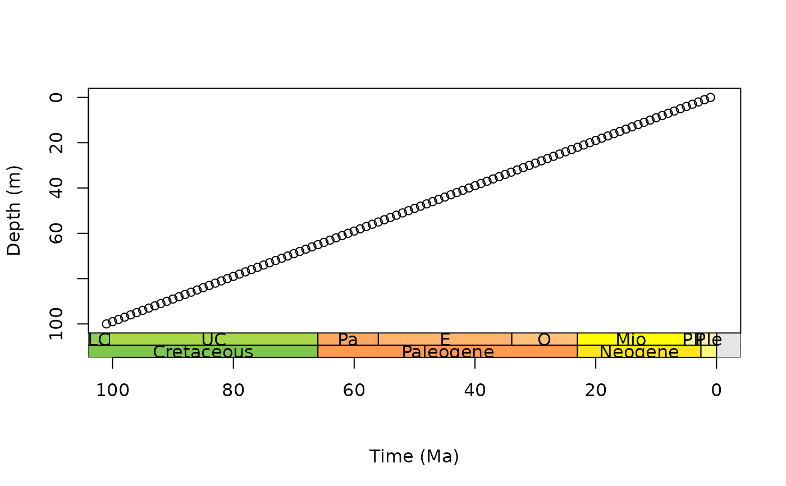
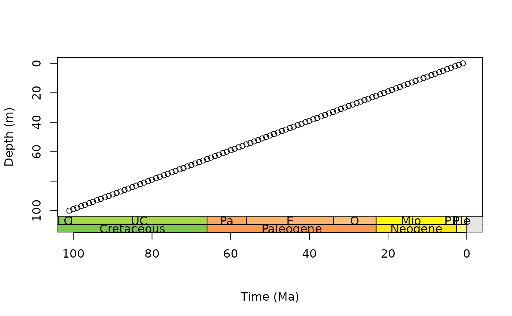
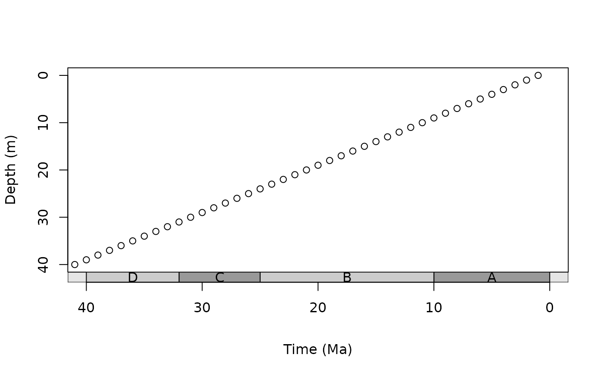
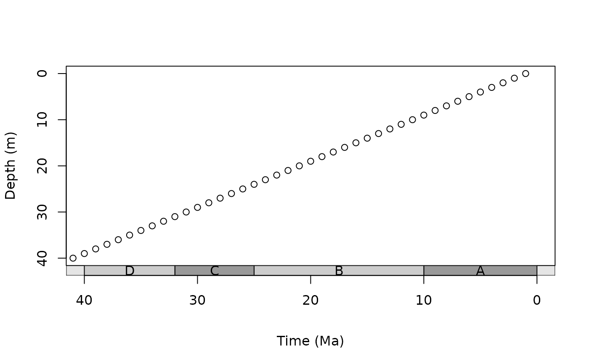

axis_geo behaves similarly to axis in that it
adds an axis to the specified side of a base R plot. The main difference
is that it also adds a geological timescale between the plot and the axis.
The default scale includes international periods from
ICS. However, international epochs,
stages, eons, and
eras and any interval data hosted by Macrostrat are
also available from the deeptime package (see
getScaleData). A custom interval dataset can also
be provided (see Details below). The appearance of the axis is highly
customizable (see Usage below), with the intent that plots will be
publication-ready.
Usage
axis_geo(
side = 1,
intervals = "epochs",
height = 0.05,
fill = NULL,
lab = TRUE,
lab_col = NULL,
lab_size = 1,
rot = 0,
abbr = TRUE,
center_end_labels = TRUE,
skip = c("Quaternary", "Holocene", "Late Pleistocene"),
bord_col = "black",
lty = par("lty"),
lwd = par("lwd"),
bkgd = "grey90",
neg = FALSE,
exact = FALSE,
round = FALSE,
tick_at = NULL,
tick_labels = TRUE,
...
)Arguments
- side
integer. Which side to add the axis to (1: bottom, the default;2: left;3: top;4: right).- intervals
The interval information to use to plot the axis: either A) a
characterstring indicating a built-in or remotely hosteddata.frame(seegetScaleData), or B) a customdata.frameof time interval boundaries (see Details).- height
numeric. The relative height (or width ifsideis2or4) of the scale. This is relative to the height (ifsideis1or3) or width (ifsideis2or4) of the plot.- fill
character. The fill color of the boxes. The default is to use thecolorcolumn included inintervals. If a custom dataset is provided withintervalswithout acolorcolumn and without specifyingfill, a greyscale will be used. Custom fill colors can be provided with this option (overriding thecolorcolumn) and will be recycled if/as necessary.- lab
logical. Should interval labels be included?- lab_col
character. The color of the labels. The default is to use thelab_colororlab_colourcolumn included inintervals. If a custom dataset is provided withintervalswithout alab_colororlab_colourcolumn and without specifyinglab_col, all labels will be black. Custom label colors can be provided with this option (overriding thelab_colororlab_colourcolumn) and will be recycled if/as necessary.- lab_size
numeric. The size of the labels (seecexingraphics parameters).- rot
numeric. The amount of counter-clockwise rotation to add to the labels (in degrees). Note, labels for axes added to the left or right sides are already rotated 90 degrees.- abbr
logical. Should labels be abbreviated? This only works if the data has anabbrcolumn, otherwise thenamecolumn will be used regardless of this setting.- center_end_labels
logical. Should labels be centered within the visible range of intervals at the ends of the axis?- skip
A
charactervector of interval names indicating which intervals should not be labeled. IfabbrisTRUE, this can also include interval abbreviations. Quaternary, Holocene, and Late Pleistocene are skipped by default. Set to NULL if this is not desired.- bord_col
character. The border color of the interval boxes.- lty
character. Line type (seeltyingraphics parameters).- lwd
numeric. Line width (seelwdingraphics parameters).- bkgd
character. The color of the background color of the scale when no intervals are being shown.- neg
logical. Set this toTRUEif your x-axis is using negative values. If the entire axis is already negative, this will be set toTRUEfor you.- exact
logical. Set this toTRUEif you want axis tick marks and numeric tick labels placed at the interval boundaries.- round
integer. Number of decimal places to which exact axis labels should be rounded (usinground). If no value is specified, the exact values will be used. Trailing zeros are always removed.tick_atandtick_labelscan be used to include labels with trailing zeros.- tick_at
A
numericvector specifying custom points at which tick marks are to be drawn on the axis. If specified, this is passed directly toaxis. The default is to compute tick mark locations automatically (seeaxTicks).- tick_labels
Either a) a
logicalvalue specifying whether (numerical) annotations should be made at the tick marks specified byat, or b) a customcharacterorexpressionvector of labels to be placed at the tick marks. Ifatis specified, this argument is passed directly toaxis.- ...
Further arguments that are passed directly to
axis.
Value
No return value. Function is used for its side effect, which is to add an axis of the geological timescale to an already existing plot.
Details
If a custom data.frame is provided (with intervals), it should
consist of at least 3 columns of data. See deeptime::periods for an
example.
The
namecolumn (interval_nameis also allowed) lists the names of each time interval. These will be used as labels if no abbreviations are provided.The
max_agecolumn (max_mais also allowed) lists the oldest boundary of each time interval. Values should always be positive.The
min_agecolumn (min_mais also allowed) lists the youngest boundary of each time interval. Values should always be positive.The
abbrcolumn is optional and lists abbreviations that may be used as labels.The
colorcolumn (colouris also allowed) is also optional and lists a color for the background for each time interval (see the Color Specification sectionhere).The
lab_color(lab_colouris also allowed) column is also optional and lists a color for the label for each time interval (see the Color Specification sectionhere).
intervals may also be a list if multiple time scales should be added
to a single side of the plot. In this case, height, fill,
lab, lab_col, lab_size, rot, abbr,
center_end_labels, skip, bord_col, lty, and
lwd can also be lists. If these lists are not as long as
intervals, the elements will be recycled. If individual values
(or vectors, e.g. for skip) are used for these parameters, they will
be applied to all time scales (and recycled as necessary). If multiple scales
are requested they will be added sequentially outwards starting from the plot
border. The axis will always be placed on the outside of the last scale.
Examples
# track user par
oldpar <- par(no.readonly = TRUE)
# single scale on bottom
par(mar = c(6.1, 4.1, 4.1, 2.1)) # modify margin
plot(0:100, axes = FALSE, xlim = c(100, 0), ylim = c(100, 0),
xlab = NA, ylab = "Depth (m)")
box()
axis(2)
axis_geo(side = 1, intervals = "periods")
# the line argument here depends on the absolute size of the plot
title(xlab = "Time (Ma)", line = 4)
 # stack multiple scales
par(mar = c(7.1, 4.1, 4.1, 2.1)) # further expand bottom margin
plot(0:100, axes = FALSE, xlim = c(100, 0), ylim = c(100, 0),
xlab = NA, ylab = "Depth (m)")
box()
axis(2)
axis_geo(side = 1, intervals = list("epochs", "periods"))
# the line argument here depends on the absolute size of the plot
title(xlab = "Time (Ma)", line = 6)

# scale with MacroStrat intervals
par(mar = c(6.1, 4.1, 4.1, 2.1)) # modify margin
plot(0:30, axes = FALSE, xlim = c(30, 0), ylim = c(30, 0),
xlab = NA, ylab = "Depth (m)")
box()
axis(2)
axis_geo(side = 1, intervals = "North American land mammal ages")
# the line argument here depends on the absolute size of the plot
title(xlab = "Time (Ma)", line = 4)
# stack multiple scales
par(mar = c(7.1, 4.1, 4.1, 2.1)) # further expand bottom margin
plot(0:100, axes = FALSE, xlim = c(100, 0), ylim = c(100, 0),
xlab = NA, ylab = "Depth (m)")
box()
axis(2)
axis_geo(side = 1, intervals = list("epochs", "periods"))
# the line argument here depends on the absolute size of the plot
title(xlab = "Time (Ma)", line = 6)

# scale with MacroStrat intervals
par(mar = c(6.1, 4.1, 4.1, 2.1)) # modify margin
plot(0:30, axes = FALSE, xlim = c(30, 0), ylim = c(30, 0),
xlab = NA, ylab = "Depth (m)")
box()
axis(2)
axis_geo(side = 1, intervals = "North American land mammal ages")
# the line argument here depends on the absolute size of the plot
title(xlab = "Time (Ma)", line = 4)
 # scale with old GTS intervals
par(mar = c(6.1, 4.1, 4.1, 2.1)) # modify margin
plot(0:100, axes = FALSE, xlim = c(100, 0), ylim = c(100, 0),
xlab = NA, ylab = "Depth (m)")
box()
axis(2)
axis_geo(side = 1, intervals = time_bins(rank = "period"))
# the line argument here depends on the absolute size of the plot
title(xlab = "Time (Ma)", line = 4)

# scale with custom intervals
intervals <- data.frame(min_age = c(0, 10, 25, 32),
max_age = c(10, 25, 32, 40),
name = c("A", "B", "C", "D"))
par(mar = c(6.1, 4.1, 4.1, 2.1)) # modify margin
plot(0:40, axes = FALSE, xlim = c(40, 0), ylim = c(40, 0),
xlab = NA, ylab = "Depth (m)")
box()
axis(2)
axis_geo(side = 1, intervals = intervals)
# the line argument here depends on the absolute size of the plot
title(xlab = "Time (Ma)", line = 4)
# reset user par
par(oldpar)
# scale with old GTS intervals
par(mar = c(6.1, 4.1, 4.1, 2.1)) # modify margin
plot(0:100, axes = FALSE, xlim = c(100, 0), ylim = c(100, 0),
xlab = NA, ylab = "Depth (m)")
box()
axis(2)
axis_geo(side = 1, intervals = time_bins(rank = "period"))
# the line argument here depends on the absolute size of the plot
title(xlab = "Time (Ma)", line = 4)

# scale with custom intervals
intervals <- data.frame(min_age = c(0, 10, 25, 32),
max_age = c(10, 25, 32, 40),
name = c("A", "B", "C", "D"))
par(mar = c(6.1, 4.1, 4.1, 2.1)) # modify margin
plot(0:40, axes = FALSE, xlim = c(40, 0), ylim = c(40, 0),
xlab = NA, ylab = "Depth (m)")
box()
axis(2)
axis_geo(side = 1, intervals = intervals)
# the line argument here depends on the absolute size of the plot
title(xlab = "Time (Ma)", line = 4)
# reset user par
par(oldpar)